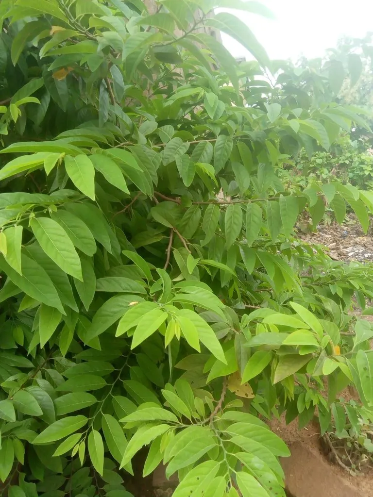

乔木 · 植物界
番荔枝 Annona squamosa

番荔枝科番荔枝属半落叶小乔木，聚合浆果表面呈瘤状似佛头，果肉乳白香甜，是热带著名的水果，原产美洲。
- 分类
- 门被子植物门纲木兰纲目木兰目科番荔枝科属番荔枝属
- 栖息环境
- 热带低海拔平原与丘陵，喜高温干燥、阳光充足，不耐寒
- 地理分布
- 原产热带美洲；中国广东、广西、福建、海南、云南、台湾栽培
- 保护级别
- 暂无评估；中国未列入国家重点保护野生植物名录
物种志
番荔枝为番荔枝科番荔枝属半落叶小乔木，高三至五米，树皮灰白色，枝条细弱。叶片互生，椭圆状披针形，全缘，表面深绿，背面灰绿并被细毛。花单生或两至三朵簇生于叶腋，花瓣三枚，淡黄绿色，肉质，花期五至六月；聚合浆果球形或心形，表面由多数瘤状突起组成，成熟时黄绿色，果肉乳白色、香甜，果期六至十一月。
番荔枝原产热带美洲，中国广东、广西、福建、海南、云南、台湾等地有栽培。它喜高温干燥和充足阳光，不耐寒，适宜疏松肥沃、排水良好的砂质土壤。果实富含糖分和维生素，果肉柔软香甜，是热带著名水果，因外形似佛头而被称为释迦果；根、叶和种子在民间入药，有杀虫止痢之效。番荔枝在华南已成为重要的经济果树，栽培品种繁多。
形态与习性
- 株高3–5 m，小乔木
- 花期5–6 月，花淡黄绿色
- 果期6–11 月，聚合浆果
- 光照喜光，光照足则果甜
- 水分耐旱，忌积水
- 土壤疏松砂质壤土
- 主要用途热带水果，根叶药用
趣味知识
- 番荔枝的果实由许多离生心皮聚合而成，表面瘤状突起，形似佛头。
- 它的果肉乳白、香甜软糯，成熟后果皮会自然裂开。
- 番荔枝的种子含生物碱，民间曾用种子粉末驱虫，但需谨慎使用。